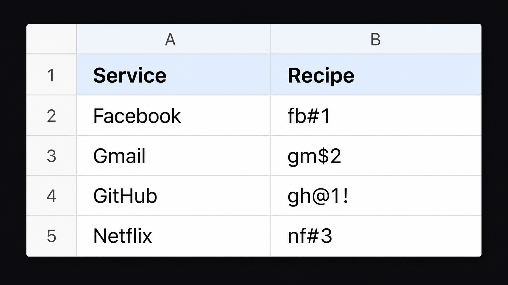

How PassChef works.
Keep Recipes in your Cookbook and private Spices encrypted on your device. Cook each Dish when you need it.
The Idea
A Recipe combines an ingredient with one of your private Spices to cook a Dish. The Cookbook holds Recipes, not the finished passwords.
Your Spices are encrypted on the device and in Chrome Sync. You unlock the kitchen with your master password; Spices do not appear in the Cookbook.

Only Recipes are visible in the Cookbook.
S3cretsynthetic example onlyS3cretfbAnyone with only the Recipe still lacks the private Spice needed to cook your Dish. Use long, unpredictable ingredients and strong Spices.
Anatomy of a Recipe
Read a Recipe as ingredient, cooking style, Spice jar, then optional modifiers and verification tag.
Cooking styles: ingredient abc, Spice XYZ.
| Symbol | Meaning | Dish |
|---|---|---|
# | Topping — Spice first | XYZabc |
$ | Base — Spice last | abcXYZ |
@ | Filling — Spice in the middle | aXYZbc |
% | Mix — alternate one unit | aXbYcZ |
^ | Sandwich — alternate pairs | abXYcZ |
A Builder verification tag checks the Cookbook/profile match. It does not change the Dish; you can cook by hand without the tag.
Modifiers
Place modifiers after the Spice jar number. They are deterministic, but stripping characters is not reversible. Combined Spice transformations run strip, reverse, then uppercase.
r4nd0m#1!?Spice jar 1 is reversed, then uppercased, before being placed first.Daily Use
Unlock PassChef, select a Recipe cell in your Google Cookbook, then open the extension. A valid Recipe cooks a Dish; missing data or a mismatch stays on Home with guidance.
Keep Recipes in cells; private Spices stay encrypted separately.
Click a cell such as fb#1 or gh$2!, then open PassChef with its toolbar icon.
The icon opens the popup. Ctrl+Shift+L cooks the selected cell through the page flow; it is not the popup opener.
Use Copy to put the Dish on the clipboard. PassChef attempts to clear it after 30 seconds; closing the popup alone does not clear the system clipboard.